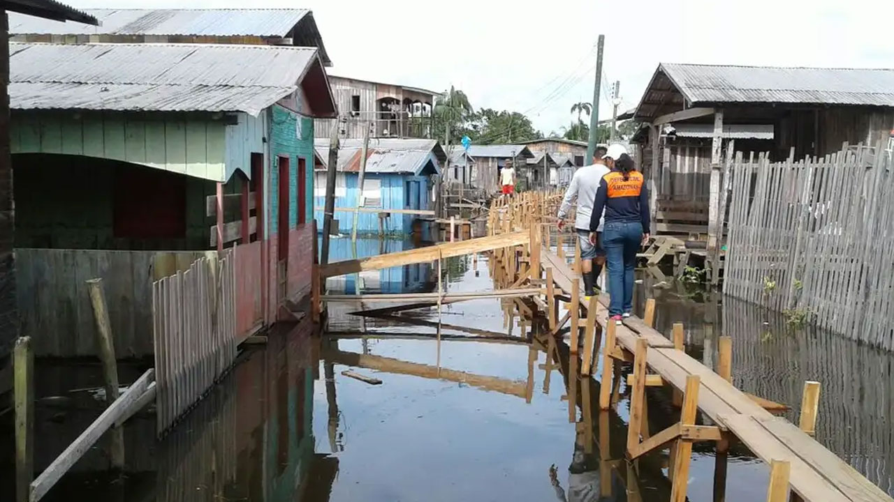

Atuação da APS em inundações graduais, secas e estiagens
Seja bem-vindo(a) à terceira e última aula do módulo III.
O objetivo agora é elaborar estratégias de mitigação e adaptação aplicáveis à Atenção Primária à Saúde (APS) e integradas a ações de vigilância para garantir o cuidado contínuo.
Ao final desta aula, você estará apto(a) para:
- Identificar as estratégias para a Gestão de Riscos em Desastres em Saúde que podem ser usadas pela APS para o manejo dos principais agravos e condições de saúde associados a secas, estiagens e inundações graduais; e
- Articular ações intersetoriais a partir das vulnerabilidades sociais, econômicas e políticas presentes nos territórios para uma melhor resposta em situações de desastres extensivos.
Nas aulas anteriores analisamos as características dos desastres extensivos e percebemos o quanto a saúde da população fica comprometida pela ausência ou pelo excesso de água que atinge gradualmente diferentes territórios no Brasil. Os efeitos na saúde se repetem e aprofundam em complexidade ao passar do tempo e de acordo com as especificidades de cada território.

Apesar de terem início gradativo e previsível, os eventos graduais podem ser caracterizados como desastres principalmente pela intensidade e pela falta de ações prospectivas. Até aqui foi possível identificar que as iniquidades e as vulnerabilidades trazem também maiores riscos para as populações mais pobres. Esses riscos quando intensificados geram maior ocorrência de agravos, serviços de saúde sobrecarregados ou interrompidos, além de insegurança alimentar.
Os potenciais da APS
A Atenção Primária à Saúde (APS) é a porta de entrada preferencial do usuário ao Sistema Único de Saúde (SUS). Os Agentes Comunitários de Saúde (ACS) e Agentes de Combate às Endemias (ACE), em cada território, desempenham um papel essencial de identificar as condições de vida e de saúde das pessoas. A partir desse diagnóstico, as equipes da Estratégia de Saúde da Família (eSF), as equipes multiprofissionais (eMulti) e a gestão local devem traçar estratégias para intervir frente aos desafios apresentados.
Alguns dos pontos importantes para prevenção são: a identificação de acesso à água, se essa água é filtrada, de que forma é feito o armazenamento, se há saneamento básico; o acesso das famílias a programas de transferência de renda e se as famílias enfrentam insegurança alimentar.
O preenchimento do Modelo de Informação de Cadastro Individual (MICI) e do Modelo de Informação de Cadastro Domiciliar e Territorial (MICDT) é uma tarefa essencial que auxilia as equipes no planejamento de ações.
Com o avanço tecnológico, os ACS também utilizam o aplicativo da estratégia e-SUS APS, chamado e-SUS Território. Por meio do aplicativo, o fluxo de cadastro e atualização do território passa a ser contínuo e é atualizado em uma rotina pré-estabelecida pela organização da equipe, buscando sempre manter uma regularidade.
Você utiliza o app do e-SUS Território? Para mais informações, acesse o site do Gov.br e baixe o app.
Confira também o Capítulo 3 - Cadastro da Atenção Primária à Saúde.
A partir da identificação dos desafios enfrentados (por família) e do reconhecimento dos grupos em risco, além de considerar as características de cada território, é necessário garantir o acompanhamento programático dos grupos mais vulneráveis, fazendo o monitoramento de pessoas e agravos. Esse aspecto é importante para que sejam garantidas vigilância nutricional, imunização, prevenção de doenças causadas por água contaminada, orientações sobre sinais de alarme, além do planejamento de ações de educação em saúde para a população visando à manutenção do cuidado.
Uma ferramenta disponível para esse trabalho é o Sistema de Vigilância Alimentar e Nutricional – Sisvan Web –, que tem por objetivo consolidar os dados referentes às ações de Vigilância Alimentar e Nutricional, desde o registro de dados antropométricos e de marcadores de consumo alimentar até a geração de relatórios. Acesse a ferramenta Sisvan Web.
As equipes de ESF são responsáveis também por manter organizadas as listagens de gestantes, crianças, usuários com mobilidade reduzida, acamados e idosos. Dessa forma, será possível direcionar ações mesmo nos momentos em que o serviço está com limitações por inundação gradual, ou pelo maior risco de vida em situações de seca ou estiagem prolongada.
Além disso, é importante que as equipes sejam treinadas e se organizem para as ocasiões do ano em que normalmente acontecem esses eventos, bem como focarem a atenção aos sinais que se repetem ano após ano. Com a identificação dos territórios e das famílias em risco, todos devem se articular intra e intersetorialmente para mitigar os riscos a grupos vulneráveis.
Veja um exemplo a seguir, disponível no Monitor de Secas:
![Mapa do Brasil do Monitor de Secas referente a fevereiro de 2026, ela apresenta a distribuição espacial da seca no país, indicando diferentes níveis de intensidade e os tipos de impactos associados, há uma legenda na parte inferior do mapa. A região mais crítica está no Nordeste, especialmente entre partes do Rio Grande do Norte, Paraíba, Pernambuco e Ceará, onde aparecem áreas de seca extrema (S3) e seca excepcional (S4), grande parte do Nordeste apresenta seca moderada a grave (S1 e S2), no Centro-Oeste e em partes do Sudeste, predominam áreas de seca fraca a moderada, com alguns núcleos de seca grave, no Sul, há áreas dispersas de seca fraca, especialmente no Rio Grande do Sul e Santa Catarina, na Amazônia, observam-se focos isolados de seca fraca e moderada, principalmente em áreas do norte e oeste da região. Na região Norte os impactos são predominantemente de curto prazo (agricultura, pastagens), na Região Nordeste há presença de áreas com impactos combinados (curto e longo prazo) (agricultura, pastagens, hidrologia, reservatórios, ecologia), na Região Centro-Oeste há impactos principalmente de curto prazo (agricultura, pastagens), na Região Sudeste há presença significativa de áreas classificadas como curto e longo prazo (agricultura, pastagens, hidrologia, reservatórios, ecologia), na Região Sul há impactos principalmente de curto prazo (agricultura, pastagens).](../media/images/modulo3/aula3-img2.jpg "Fonte: Monitor de Secas/ANA")
O Atlas Digital de Desastres no Brasil é uma ferramenta que reúne registros de desastres ocorridos no país desde 1991 e auxilia na formulação de políticas públicas para redução de riscos. Acesse o Atlas Digital.
Com base nas informações disponíveis nessas ferramentas, entre outras, a gestão e as equipes da APS podem trabalhar num plano de contingência junto às comunidades, para que essas saibam identificar situações de agravamento e, a partir disso, como se organizar durante os períodos de intensificação das inundações graduais, secas e estiagens.
Outras instâncias da Secretaria Municipal de Saúde, como Vigilância Sanitária, Vigilância Epidemiológica, Vigilância Ambiental, Vigilância em Saúde do Trabalhador, Vigidesastres e Centro de Informação e Assistência Toxicológica (quando houver), devem se articular junto à APS para orientar o acesso a recursos em situações de escassez de água ou de risco de contaminação, além de testagem de água.
Em municípios pequenos, que não possuam estrutura semelhante, a articulação pode ser realizada com as equipes da Secretaria Estadual de Saúde.
Além disso, a Saúde deve buscar se articular com outros setores como Secretarias da Assistência Social, Educação, Infraestrutura, Renda e Trabalho, para o desenvolvimento de medidas que gerem resiliência local, garantindo uma atuação prospectiva para redução de vulnerabilidades.
As equipes da APS e suas articulações intra e intersetoriais
Um dos processos de trabalho da APS é desenvolvido pelas eMulti, as equipes multiprofissionais. Em articulação com as demais equipes da APS, são grandes aliadas na garantia do acesso a programas de transferência de renda. Além disso, também podem auxiliar no incentivo a ações de orientação sobre atividades produtivas e articulação para espaços formativos e geradores de renda. Podem também oferecer orientações de apoio à construção de formas seguras para armazenamento de água e apoio no manejo de situações de risco nutricional, entre outros aspectos.
Você sabe o que é eMulti? São equipes da APS compostas por profissionais de saúde de diferentes categorias e áreas do conhecimento. Elas operam de maneira complementar e integrada às outras equipes que atuam na APS. São responsáveis pela mesma população e território, fortalecendo as articulações com outros equipamentos de saúde e de outros setores (educação, serviço social, cultura, lazer, esporte).
Além disso, outro foco importante de atuação da APS são os casos de sofrimento mental, situações de violência e de uso abusivo de álcool e outras drogas, que aumentam em cenários de agravamento dos desastres extensivos. Por esse motivo, a sua identificação e o acolhimento dessas pessoas devem ser realizados pelas equipes da ESF e da eMulti.
Quando necessário, outros pontos da Rede de Atenção Psicossocial devem ser articulados e envolvidos, a exemplo de: Centros de Atenção Psicossocial (CAPS) para pessoas de todas as idades com intenso sofrimento psíquico; CAPSi, para crianças e adolescentes com sofrimento psíquico intenso; e CAPS ad (Álcool e Drogas), para todos aqueles em situações relacionadas ao uso prejudicial de álcool e outras drogas.
A disponibilidade desses serviços – CAPS, CAPSi e CAPS ad – depende do número de habitantes de cada município. Os CAPS são previstos para municípios a partir de 15 mil habitantes; e as demais modalidades para municípios a partir de 70 mil habitantes.
Uma iniciativa importante com a qual se articular é o Saúde na Escola. O Programa Saúde na Escola (PSE) visa promover a saúde e a qualidade de vida dos estudantes da educação básica, com foco na prevenção de doenças, na promoção de hábitos saudáveis e na melhoria das condições de saúde de crianças e adolescentes. O PSE articula-se ao trabalho da APS em cada território e pode contribuir para a identificação de vulnerabilidades locais e para o desenvolvimento de ações de educação em saúde focadas nos desafios enfrentados pelos estudantes. A articulação entre PSE e APS é importante também no processo de integração entre a educação e a saúde para o enfrentamento dos impactos das mudanças climáticas.
O Caderno Temático do PSE: Saúde Ambiental, publicado conjuntamente pelos Ministério da Saúde e da Educação, aborda a relação entre saúde ambiental, qualidade de vida e promoção da saúde no contexto escolar e comunitário. Também reúne conteúdos sobre saneamento básico, mudanças climáticas, poluição, doenças transmitidas por vetores e vulnerabilidades socioambientais, articulando ações intersetoriais entre saúde e educação. Além disso, apresenta estratégias educativas e de vigilância em saúde que contribuem para a formação de territórios mais saudáveis, sustentáveis e resilientes. Acesse o Caderno Temático do PSE.
É importante reforçar que, como dito, os desastres extensivos, muitas vezes, são naturalizados e tratados como eventos característicos de uma região, dificultando a percepção da população e das equipes sobre os riscos relacionados à saúde. Embora façam parte de um ciclo natural, inundações graduais, secas e estiagens têm se tornado mais intensas, longas e atípicas em consequência das mudanças climáticas.
Você conhece a cobertura da APS no seu município? Uma ferramenta interessante e que pode ser acessada são os Relatórios da Atenção Primária à Saúde. Explore os relatórios disponíveis de forma pública para gestores! Acesse a ferramenta e veja informações sobre financiamento, cobertura e outras estratégias e programas da Atenção Primária à Saúde na sua região.
Veremos a seguir o que você e sua equipe, como profissionais da APS, podem fazer nas etapas de Prevenção, Preparação, Resposta e Recuperação da Gestão de Riscos em Desastres em Saúde.
touch_app CliqueToque em cada ítem e conheça.
Quando o nível da água, a seca e o período de estiagem estão dentro de índices previstos:
- Elaborar Plano de Ação da Unidade Básica de Saúde (preparação, resposta e recuperação), com primeira e principal ação desta etapa.
- Manter diálogo com a gestão municipal para identificação de ações a serem desenvolvidas, principalmente voltadas à educação permanente dos profissionais da rede de APS e equipe de gestão.
- Identificar possíveis fragilidades e desenvolver o corpo assistencial e a estrutura da rede de APS, a fim de fortalecer a capacidade de resposta em situações de agravamento do cenário.
- Identificar parcerias e colaborações com outras instituições locais, como Defesa Civil, Corpo de Bombeiros, Segurança Civil, organizações não governamentais e lideranças comunitárias.
- Promover diálogos e formação permanente dos profissionais da APS sobre mudanças climáticas e ocorrência de desastres extensivos de acordo com as características do território.
- Realizar a territorialização em saúde de forma participativa, identificando as especificidades locais e criando redes de apoio comunitário.
- Identificar Unidades Básicas de Saúde em áreas de risco de cheias e unidades que não ficam em áreas de risco, estabelecendo diálogo para que sejam unidades de atendimento. Ou até mesmo comunicando as unidades alternativas de referência para continuidade do cuidado em caso de locais com cheias graduais e planos já estabelecidos.
- Construir rede de atores, com protagonismo das comunidades locais organizadas como um elemento central para articulação e mobilização de diferentes instituições.
Quando o nível da água começa a subir gradualmente e há previsão de intensificação da seca e de estiagem prolongada, a preparação otimiza a organização da resposta. O que fazer:
- Planejar ações educativas e de promoção da saúde voltadas à conscientização da população sobre doenças e riscos associados a inundações graduais, secas e estiagens.
- Identificar riscos à saúde e possíveis situações de desassistências, em casos de cenários agravados por inundações graduais, secas e estiagens.
- Estruturar um fluxo de acolhimento em casos de cenários agravados a partir dos grupos prioritários, utilizando escuta qualificada.
- Realizar gestão de medicamentos, soros e vacinas para que não faltem nas Unidades Básicas de Saúde.
- Monitorar e comunicar aos profissionais da rede de APS a ocorrência de doenças e agravos relacionados aos riscos.
- Notificar os casos suspeitos e confirmados de cada agravo no Sistema de Informação de Agravos de Notificação (Sinan).
- Elaborar plano de comunicação de risco à população em geral.
- Planejar a articulação intersetorial entre a APS, outras áreas da saúde e demais setores, como assistência social, educação e finanças, para atender às demandas de usuários pertencentes a grupos vulneráveis.
- Fortalecer redes de apoio existentes na comunidade, incluindo grupos de voluntários, organizações religiosas, escolas e associações de moradores, que podem desempenhar um papel importante na resposta em cenários mais agravados.
- Desenvolver junto com as comunidades e atores locais medidas de mitigação dos impactos sobre a saúde decorrentes de desastres extensivos.
- Promover ações de educação em saúde, utilizando estratégia de comunicação com envolvimento da população, de forma contínua, sobre situações de risco, como consumo de água não segura, exposição a animais peçonhentos e alerta a sinais e sintomas das principais doenças infectocontagiosas.
- Elaborar comunicados à população em geral com orientações de cuidados e meios de proteção à vida.
- Criar um fluxo de informações entre áreas da saúde envolvidas nas respostas ao cenário, com o setor saúde e a população, setor saúde e a imprensa, pois um processo de comunicação inadequado pode inviabilizar todo o trabalho desenvolvido, bem como provocar o pânico.
- Organizar fluxos de atendimento viáveis de operacionalização para outros pontos das Redes de Atenção à Saúde em funcionamento, notadamente a Rede de Atenção às Urgências e Emergências (RUE) e Rede de Atenção Psicossocial (Raps) para os casos mais graves.
- Identificar e estabelecer rede de referência para atendimento ambulatorial e hospitalar em locais seguros, além de formas de transporte, quando necessário, em locais de difícil acesso.
Quando o nível da água extrapola o previsto, a seca se intensifica e a estiagem se prolonga.
- Ativar Plano de Ação da Unidade Básica de Saúde (preparação, cuidado e resposta e recuperação).
- Orientar a população sobre as unidades de saúde disponíveis para atendimento, informando horário de funcionamento e fluxos assistenciais nas Unidades de Atenção Primária (em caso de inundações graduais).
- Identificar cenários de risco e situações de desassistências à saúde.
- Intensificar o acompanhamento das ações realizadas no território, a fim de garantir o suporte necessário para a assistência à saúde da população.
- Definir, quando possível, mecanismos de transporte por via terrestre ou fluvial para o encaminhamento dos casos moderados e graves, bem como fortalecer a articulação com os serviços de regulação e com o Serviço de Atendimento Móvel de Urgência (Samu) quando este estiver disponível no município.
- Redirecionar equipes das UBS que tiveram as atividades inviabilizadas pelo desastre extensivo para atendimento e apoio aos desabrigados e desalojados.
- Atualizar cadastros individuais dos desabrigados e desalojados (em inundações graduais).
- Atender e acompanhar pacientes egressos de outros níveis de atenção.
- Aplicar planos de cuidados individual e familiar com as equipes que atuam na APS, incluindo equipes de Saúde Bucal (eSB), Saúde da Família (eSF), Multiprofissional (eMulti), Consultório na Rua (eCR) e Atenção Primária (eAP).
- Identificar e encaminhar as necessidades de articulações intersetoriais para o apoio e o cuidado à população, especialmente em processos de luto.
- Ofertar acolhimento e cuidado às vítimas de violência sexual que assegure o direito à confidencialidade, com a finalidade de oferecer escuta, apoio e orientações, assim como a disponibilidade de testes rápidos para infecções sexualmente transmissíveis (IST) e HIV, incluindo testes rápidos para gravidez, conforme necessário.
- Primar pelo cuidado às populações vulnerabilizadas como: pessoas LGBTQIA+; pessoas negras e quilombolas; população de migrantes, refugiados e apátridas; pessoas em situação de rua; povos indígenas; povos dos campos, das florestas e das águas; e população privada de liberdade.
- Fazer vigilância e atenção à saúde do trabalhador.
- Avaliar danos dos serviços de saúde da APS (em caso de inundações graduais).
- Realizar acolhimento a partir dos grupos prioritários, utilizando escuta qualificada para o manejo das necessidades das pessoas de forma oportuna e efetiva.
- Reorganizar fluxos de atendimento viáveis de operacionalização para outros pontos das Redes de Atenção à Saúde em funcionamento, notadamente a Rede de Atenção às Urgências e Emergências (RUE) e Rede de Atenção Psicossocial (Raps) para os casos mais graves.
- Monitorar, por meio de articulação intersetorial, oferta e qualidade da água para consumo humano.
- Monitorar e garantir à população o acesso à água potável, com pontos de distribuição e bebedouros públicos, em especial em áreas remotas e de maior vulnerabilidade social.
- Reforçar ações de atenção à saúde mental.
Quando o nível da água baixa, a seca ou a estiagem retornam a padrões conhecidos:
- Avaliar o novo cenário de risco e comunidades afetadas.
- Garantir a continuidade de acompanhamento de comunidades afetadas e em vulnerabilidade.
- Apoiar as populações afetadas cadastradas em programas sociais para que tenham acesso a benefícios que auxiliem na mitigação das vulnerabilidades e da insegurança alimentar.
- Planejar a adaptação a eventos futuros de acordo com aprendizados.
O Centro de Estudos e Pesquisas em Emergências e Desastres em Saúde (Cepedes), da Escola Nacional de Saúde Pública (Ensp/Fiocruz) lançou dois guias para a prevenção e a preparação para respostas aos desastres de origem natural mais frequentes no Brasil: a seca e estiagem e as inundações graduais.
Os guias Preparação para resposta à emergência em saúde pública por seca e estiagem e Preparação para resposta à emergência em saúde pública por inundações graduais têm o objetivo de orientar sobre a redução dos impactos dos desastres acerca da saúde e o bem-estar das populações e dos próprios serviços de saúde. Acesse o guia.
Há ainda o Plano de contingência para emergências em saúde pública por seca e estiagem, publicado pelo Ministério da Saúde em 2026. Acesse o plano.
Podemos concluir que a APS tem um papel muito importante para a manutenção do cuidado e a redução das iniquidades, além de servir como vigilante do território, possibilitando a atenção e o cuidado em desastres extensivos.
Nos desastres extensivos, a APS desempenha papel estratégico ao identificar vulnerabilidades, monitorar riscos, articular ações intersetoriais e garantir a continuidade do cuidado. Sua atuação antecipada contribui para reduzir iniquidades, fortalecer a resiliência comunitária e proteger a saúde da população diante dos efeitos graduais das mudanças climáticas. Confira o quadro-síntese que segue.
| Quadro-síntese – Atuação da APS diante de inundações graduais, secas e estiagens. | |||
|---|---|---|---|
| Aspecto / Evento | Inundações graduais | Secas | Estiagens |
| Sinais de alerta para atuação no território | Previsões meteorológicas, elevação progressiva do nível de rios, igarapés e áreas alagáveis; dificuldade de acesso às comunidades; interrupção gradual de serviços; deslocamento de famílias; contaminação de fontes de água. | Previsões meteorológicas, redução prolongada da disponibilidade hídrica; escassez de água para consumo humano e produção de alimentos; aumento da insegurança alimentar; perdas econômicas persistentes. | Previsões meteorológicas, diminuição das chuvas por períodos prolongados; redução de reservatórios, poços e nascentes; dificuldades de abastecimento de água; impactos sobre atividades produtivas locais. |
| Ações prioritárias da APS | Atualizar cadastros das famílias; identificar situações de desassistência; orientar sobre armazenamento seguro da água e alimentos; monitorar doenças relacionadas à água contaminada; reorganizar fluxos assistenciais e garantir continuidade do cuidado. | Identificar grupos em insegurança alimentar e nutricional; monitorar acesso à água potável; intensificar vigilância nutricional; promover educação em saúde; articular acesso a programas sociais e benefícios de proteção social. | Monitorar condições de saúde relacionadas à escassez hídrica; orientar sobre uso seguro da água; acompanhar grupos vulneráveis; planejar ações de mitigação dos impactos sanitários e sociais; fortalecer a comunicação de riscos. |
| Principais grupos e condições de risco | Famílias residentes em áreas sujeitas a alagamentos, desabrigados, idosos, gestantes, crianças, pessoas com deficiência, acamados e indivíduos com doenças crônicas. | Famílias em insegurança alimentar, trabalhadores rurais, agricultores familiares, populações rurais remotas, povos indígenas, quilombolas, ribeirinhos, idosos, crianças e pessoas com doenças crônicas. | Comunidades dependentes de abastecimento vulnerável, populações rurais, famílias em situação de pobreza, pessoas com mobilidade reduzida, gestantes, crianças, idosos, povos indígenas, quilombolas, ribeirinhos. |
| Articulação territorial e comunicação | Integrar ações com Vigilância em Saúde, Defesa Civil, Assistência Social e lideranças comunitárias; divulgar orientações sobre prevenção de doenças e acesso aos serviços de saúde. | Articular-se com Assistência Social, Educação, Agricultura, Defesa Civil; auxiliar no acesso a programas de transferência de renda; fortalecer redes comunitárias de apoio e estratégias de adaptação local. | Compartilhar informações sobre riscos e medidas preventivas; fortalecer ações intersetoriais para abastecimento de água, segurança alimentar e proteção social. |
| Objetivo da atuação da APS | Garantir a continuidade do cuidado, reduzir agravos relacionados à água contaminada e minimizar os impactos das inundações sobre a saúde da população. | Reduzir vulnerabilidades sociais e sanitárias, prevenir agravos relacionados à escassez hídrica e fortalecer a resiliência das comunidades. | Minimizar os impactos da redução das chuvas sobre a saúde, prevenir situações de desassistência e apoiar a adaptação das populações afetadas. |